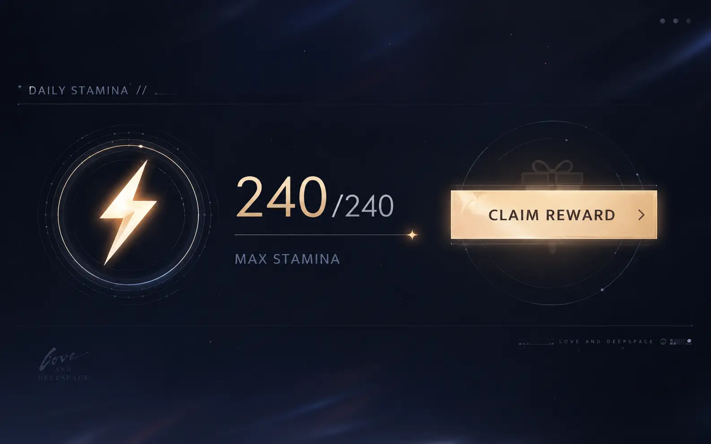
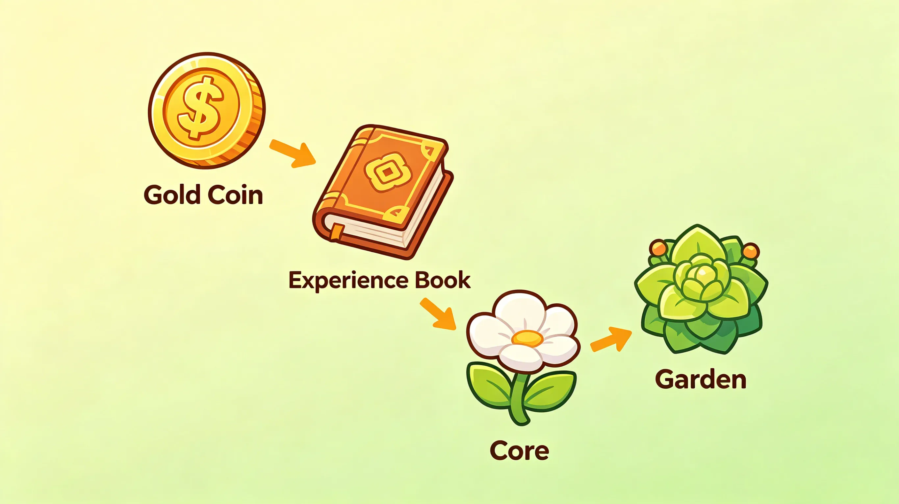
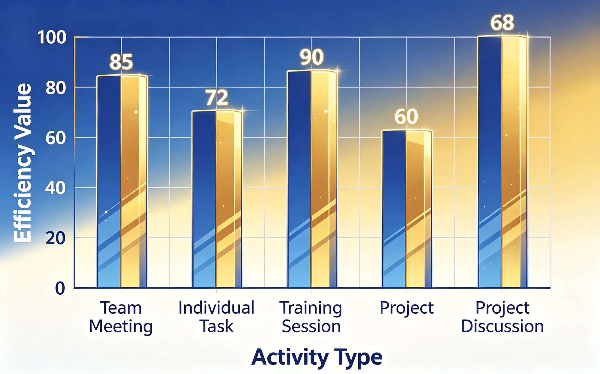
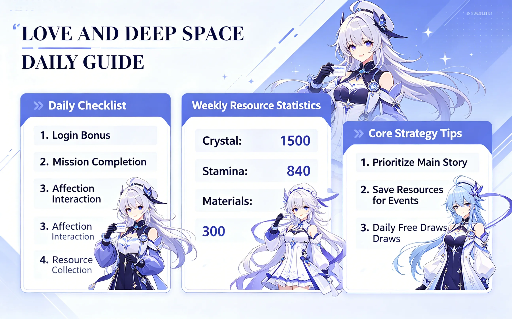

where to spend your energy · complete daily allocation guide

Stamina is your most valuable resource. Every activity — bounty hunts, core hunts, story stages, flower breeding — consumes stamina. Learning to allocate it efficiently is the single most important skill for account progression.
⚠️ Critical: Stamina caps at your maximum limit. Don't let it sit at cap — you lose regeneration time. Check in at least twice a day.
Every stamina spend has a different value. Here's the complete ranking from best to worst:
| Rank | Activity | Stamina Cost | Value per Stamina | Priority |
|---|---|---|---|---|
| S | Bounty Hunt (Gold) · ×3 daily | 20 ×3 = 60 | Highest | Must do daily |
| S | Bounty Hunt (EXP) · ×3 daily | 20 ×3 = 60 | Highest | Must do daily |
| A | Core Hunt (Protocore Dust) | 25 | High | Do 2-3x daily |
| A | Main Story / Hard Mode | 10-20 | High (first clear) | Clear once |
| B | Bounty Hunt (Gold) · beyond daily | 20 | Medium | If you have extra |
| B | Bounty Hunt (EXP) · beyond daily | 20 | Medium | If you have extra |
| C | Garden · Flower Breeding | 20 per perform | Low (long-term) | Use leftover |
| D | Side Story / Rerun stages | 10-20 | Low | Only if needed |
💡 Key Insight: The first 3 runs of Bounty Hunt (Gold and EXP) each day have boosted rewards. Always do these first. After that, value drops significantly.

Not all days are the same. Here's how to prioritize based on your current needs:

| Activity | Stamina | Reward | Value Score | Daily Cap |
|---|---|---|---|---|
| Bounty Hunt Gold (first 3) | 20 | ~12,000 gold | 100 | 3 |
| Bounty Hunt EXP (first 3) | 20 | 5 purple bottles | 95 | 3 |
| Core Hunt | 25 | ~180 dust | 75 | None |
| Bounty Hunt Gold (4+) | 20 | ~6,000 gold | 50 | None |
| Bounty Hunt EXP (4+) | 20 | 2-3 purple bottles | 45 | None |
| Ascension Mats (correct day) | 20 | 2-3 mats | 40 | None |
| Garden Performing | 20 | Flower growth | 25 | None |
| Ascension Mats (wrong day) | 20 | 1-2 mats | 20 | None |
💡 The Math: The first 3 runs of each Bounty Hunt give DOUBLE the rewards. That's why they're S-tier. After that, value drops by ~50%. Always prioritize the first 3 of each.
Bottom line — the optimal daily stamina routine:
Follow this routine every day, and your account will grow faster than 90% of players.

⚠️ One last reminder: Stamina regeneration stops when you're at cap. Log in at least twice a day to spend it. The worst waste is letting stamina sit full.